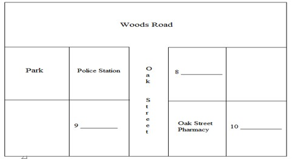
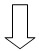
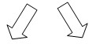
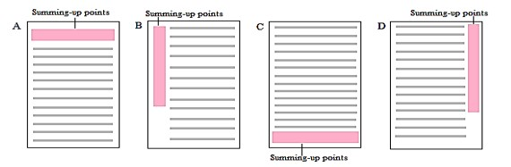

Complete the notes below.
Write NO MORE THAN THREE WORDS AND/OR A NUMBER for each answer.
Notes – Clark’s Bicycle Hire
Label the map. Choose your answers from the box below.
Write the appropriate letters A-E on the map.

Look at the table below. Rugby and tennis are given as examples of sports.
Complete the table below.
Write NO MORE THAN THREE WORDS for each answer.
| TYPE OF CLUB OR SOCIETY | EXAMPLES |
| SPORTS | rugby tennis |
| HOBBY/INTERESTS | landscape photography 11 |
| 12 | dancing speed-dating |
| RELIGIOUS | |
| INTERNATIONAL/CULTURAL | 13 Afro-Caribbean |
| 14 | human rights environmental |
| 15 | Republicans 16 |
| PERFORMING ARTS | 17 amateur theatre |
Choose the correct letters A-C.
Label the flow chart. Write NO MORE THAN THREE WORDS for each answer.


Write NO MORE THAN THREE WORDSfor each answer.
Choose the correct letter A, B, C or D.
30. Where does Carlos write summing-up points on his notes?
Complete the summary below by writing NO MORE THAN THREE WORDS in the spaces provided.
Write the appropriate letters A, B, or C against Questions 37-40.
What are the locations of the following places?
| Example | Answer | |
| the conical hills | B | |
| 37 | the town of Woomera | |
| 38 | the opal museum | |
| 39 | the Dingo Fence | |
| 40 | the sets of films |